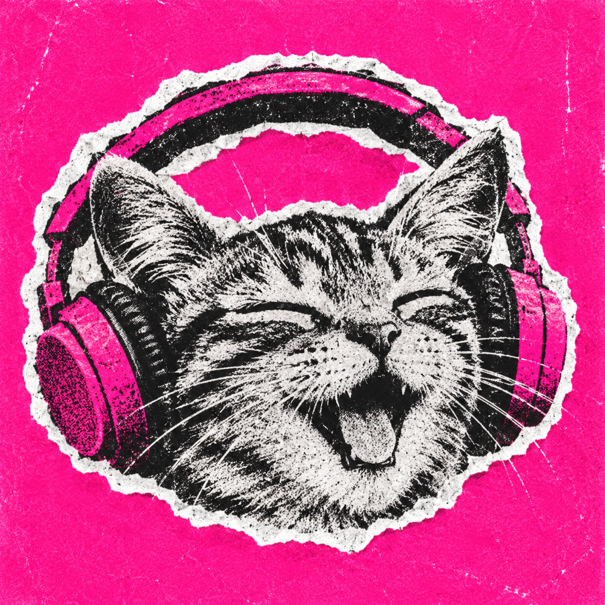

> MÜZİK
Plakların ve analog seslerin ritmiyle ilham bulmak en büyük motivasyonum.


Yönetim Bilişim Sistemleri öğrencisi olarak teknoloji, veri ve dijital sistemlerin kesiştiği alanda kendimi sürekli geliştiriyorum.
Akademik çalışmalarımın yanı sıra spor yaparak, kitap okuyarak, piyano çalarak ve resim çizerek hem zihinsel hem de fiziksel enerjimi canlı tutuyorum.
Öğrenme tutkumla hem analitik düşünceyi hem de sanatsal ve sportif disiplini birleştirip özgün projelere imza atmayı hedefliyorum.
Plakların ve analog seslerin ritmiyle ilham bulmak en büyük motivasyonum.

Düzenli fitness yaparak fiziksel enerjimi korumak, güçlenmek ve formda kalmak günlük rutinimde vazgeçilmez bir yere sahip.

Besleyici ve sağlıklı tarifler hazırlamaktan, mutfakta hem lezzetli hem dengeli yeni tatlar keşfetmekten büyük keyif alıyorum.
Benimle e-posta üzerinden doğrudan iletişime geçebilirsiniz: